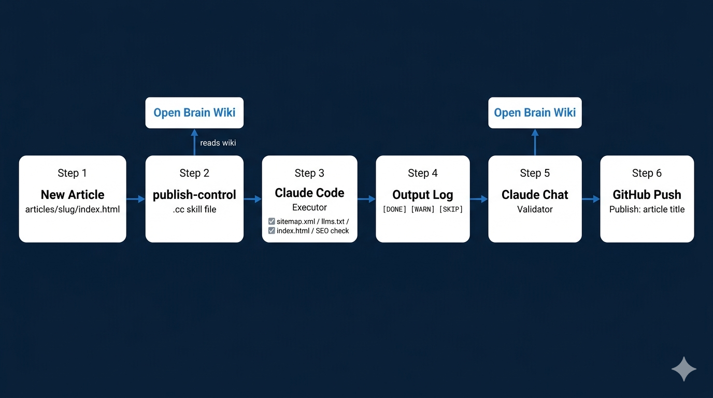

Sunday morning. My phone showed a Google Search Console alert: "New reasons prevent pages from being indexed on site https://www.scottcurtner.com/."
I clicked through. One affected page. One issue. A missing canonical tag¹ — a single line of HTML that tells Google which version of a page is the authoritative one — on my homepage's index.html file. Five-minute fix. I added the tag, pushed the change, moved on.
Except I didn't move on. Because the canonical tag was just the thread.
I started pulling. How many of my other article pages were missing canonical tags? What about meta descriptions, the short summaries Google shows under your link in search results? What about the sitemap² — the file that tells Google which pages exist on your site and when they were last updated? I had nine published articles. My sitemap was showing Google two pages. Two. The rest were invisible to search.
By the time I stopped pulling, I had a list of eight categories of missing or broken metadata across ten HTML files. Canonical tags. Title lengths. Open Graph tags³ — the hidden metadata that controls how your page looks when someone shares the link on LinkedIn or iMessage. Favicons. Connect footers. An llms.txt file&sup4; — an emerging standard, proposed by Jeremy Howard of Answer.AI, that tells AI systems who you are and what your site covers, the way a sitemap speaks to search engines but written for AI — that didn't exist yet.
None of this was catastrophic. But none of it was controlled either. And that distinction matters to me in ways I'll get to.
The engineer who pulled me deeper
I've been learning agentic AI systems from the engineer who's been pulling me deeper into agentic systems — a mentor who builds these things for a living and has been generous enough to let me learn by proximity. The rest has come in fragments: Nate B Jones's newsletter on building with AI&sup5; (the same guide that led me to build my own AI memory system in the first place), Y Combinator's YouTube channel&sup6;, and Matt Pocock's AI Hero work&sup7;, absorbed on the subway and at breakfast for the better part of a year. You absorb more than you realize when you're paying attention.
What I hadn't done yet was turn any of that on my own projects. I was comfortable using Claude in a browser chat window to guide my every step. "Tell me what to change. I'll change it." That's a fine way to work. But it's slow, and it requires me to be the hands for every edit.
I also had ten HTML files, each needing multiple changes. Before I could even start, I moved my site repository off a OneDrive folder on my desktop and into C:\dev\scottcurtner-website. Small decision, but a meaningful one. I was professionalizing my local environment to support a new way of working. That's when Claude Code entered the picture for the first time on this site.
Claude Code is Anthropic's command-line AI tool. You point it at a directory, describe what you need, and it reads files, proposes edits, and executes them. I'd been using it for months on other technical projects. It's fast. It's thorough. Confident in the capability, cautious about the boundary — I've seen it go sideways on ambiguous prompts. That's fine for creative work. It's not fine for a process with eight downstream dependencies.
It's also just crazy to do repetitive manual work when you've learned that a capable AI system can do it fifty times faster and more consistently. The engineers and educators who taught me agentic systems weren't building clever technology for its own sake. They were building reliable processes for consequential work.
I ran three passes across the site. First pass: canonical tags, meta descriptions, title lengths, Open Graph tags, favicons, and connect footers across all ten pages. Second pass: credentials updated sitewide — I'm pursuing my AAIA™ (the Advanced in AI Audit certification from ISACA) and my old credential listing still showed a retired Microsoft certification from the early 2000s. Third pass: a fresh llms.txt and a rebuilt sitemap with all ten pages correctly listed.
Ninety minutes. Ten files. Dozens of changes. Zero manual transcription errors.
And then I hit the problem.
An executor that self-certifies isn't a control. It's a hope.
I watched Claude Code produce output logs for each pass. Long, detailed, formatted beautifully. And I realized I was reading them the way most people read terms and conditions. Quickly. Looking for anything that seemed wrong. Trusting that anything I didn't catch was probably fine.
That's not a control. That's optimism with extra steps.
I know what a control looks like. In technology audit, you don't let the system that executes a process also certify that the process ran correctly. Separation of duties exists precisely because self-certification fails in predictable ways — not through malice, but through blind spots. The executor can only see what it touched. It can't see what it missed.
I needed a validator. A second agent that didn't execute anything, that received only the output log, and that checked it against an independent standard.
I also needed to keep my hand on the reins. I could have built two Claude Code instances running adversarially — one executing, one validating, neither requiring me at all. That's technically possible. But I'm not ready to release those reins fully to automation. I want to stay in the loop. The validator needed to be me and Claude chat working together, not another automated agent running unsupervised.
So I built the two-agent publish control.
The system
Three components. One principle.
Claude Code is the executor. When I'm ready to publish a new article, I give it four pieces of information: the article title, the canonical URL, a one-sentence description, and the file path. It reads a skill file — a set of reusable instructions stored in my repo under a .cc/ folder — and executes the full dependency chain: updates the sitemap, adds the article to my llms.txt, inserts the article card into the Writing section of my homepage, and runs an SEO check&sup8; on the new page to confirm all required tags are present.
The Open Brain wiki is the control standard. The skill file doesn't have the protocol hardcoded into it. Instead, it reads the protocol from a wiki page I maintain in a private GitHub repository, connected to Claude Code via an MCP server&sup9; (Model Context Protocol — a standard that lets AI tools connect to external data sources and services). The wiki is the living contract between agents. When the protocol changes — when I add a new dependency, say a robots.txt rule or an RSS feed — I update the wiki once. Both agents inherit the change automatically.
Claude chat is the validator. After Claude Code executes, it produces a structured output log and prompts me to paste it into Claude chat. Claude chat reads the same wiki protocol Claude Code used and validates every line against it. Did all four required steps appear as [DONE]? Did the [CHECK] line confirm the skill file and wiki are still in alignment? Are any [WARN] items blocking? If something is missing or wrong, I know before anything ships.
PUBLISH RUN — 2026-06-14 — Article Title
[CHECK] Skill fallback vs wiki alignment:
Wiki loaded: YES
Match: YES
[DONE] sitemap.xml — added URL, lastmod 2026-06-14
[DONE] llms.txt — added entry under ## Writing
[DONE] index.html — article card added at position 1
[DONE] SEO check — canonical, OG tags, favicon,
meta description, connect footer all present
[SKIP] og:image — deferred pending hero image project
The full publish flow — from new article file to GitHub push, with the Open Brain wiki as the control standard at every step.
There's one more design element worth noting. The skill file contains a hardcoded fallback protocol for when the wiki is unreachable — a network issue, an expired token, a temporary outage. But the skill doesn't silently execute the fallback. It logs that the fallback fired, then checks the fallback steps against the wiki the moment the wiki becomes available again, and flags any divergence. The control standard outlives any single run. Even a fallback execution is auditable.
I also keep a wiki for the blog writing process itself
The publish-control skill is one layer of a broader system. I maintain a set of wiki-based controls for the entire blog writing pipeline too — a checklist that fires at the end of every content development session and includes a reminder to run the publish-control skill before closing out. The wiki doesn't just govern the publish step. It governs the creative pipeline that produces the content in the first place: how I develop ideas, how I source factual claims, how I package a post for LinkedIn. The control standard runs from first draft to final push.
That probably sounds like a lot of infrastructure for a personal blog. It is. But the infrastructure isn't the point. The discipline it encodes is the point.
What the loop changed
Before I built this, publishing a new article meant: write it, push it, probably forget to update the sitemap, definitely forget to add it to llms.txt because llms.txt didn't exist yet, maybe check the SEO tags if I remembered, never run a formal check because doing one manually across ten files is exactly the kind of tedious work that gets skipped when you're trying to ship.
The executor handles the repetition. The control handles the verification. The human stays in the loop where judgment matters.
I've been thinking about that design pattern in other contexts too — systems where the output is consequential enough that "it seemed fine" isn't an audit finding you want to be writing. The separation of executor from validator isn't just good workflow hygiene. It's the minimum viable architecture for any process where errors compound. The control standard outlives any single run.
The close
I don't publish articles anymore.
I release them through an AI control that verifies every downstream dependency, flags what it can't fix, checks itself against a living standard every time it runs, and asks a second agent to confirm before anything ships.
That sentence would have sounded absurd to me six months ago. A blog post doesn't need a control framework. You write it, you push it, you move on.
Except I'm a technology auditor. And an auditor who publishes without controls is the same as any other professional who says "the process is fine because I ran it and nothing looked wrong." That's not audit. That's anecdote.
The missing canonical tag on a Sunday morning wasn't the problem. It was the signal. The problem was a process with eight dependencies and no control. I just needed something to pull the thread.
1 Google Search Central: What is URL Canonicalization
2 Google Search Central: What Is a Sitemap
3 Open Graph Protocol official specification: ogp.me
4 llms.txt specification: AnswerDotAI/llms-txt on GitHub
5 Nate B Jones: natesnewsletter.substack.com
6 Y Combinator: youtube.com/@ycombinator
7 Matt Pocock / AI Hero: aihero.dev
8 Google Search Central: SEO Starter Guide — the foundational reference for technical metadata that helps search engines crawl, index, and understand your content.
9 For a practical guide to building an MCP memory server, see I Built My Daughter an AI Brain for College on this site.